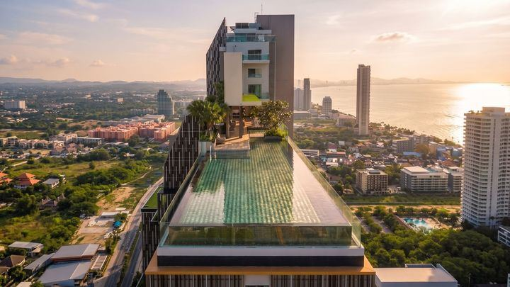

อสังหาตลาดบนของไทย
ราคาเพียงเศษเสี้ยวของเมืองใหญ่ในเอเชีย Thailand's prime homes cost a fraction of Asia's gateway cities
คอนโดตลาดบนในกรุงเทพราคาราว 30% ของฮ่องกงต่อตารางเมตร และย่านแพงที่สุดของพัทยาราว 1 ใน 5 แต่ให้ผลตอบแทนค่าเช่าสูงกว่าราว 2 เท่า รายงานนี้เทียบราคาขาย ค่าเช่า และแนวโน้มของเมืองหลักในเอเชียกับกรุงเทพ พัทยา EEC ภูเก็ต สมุย หัวหิน และเชียงใหม่ และดูว่าคนชาติไหนย้ายมาอยู่และซื้อบ้านในไทย ทุกตัวเลขมีวันที่และแหล่งที่มาPrime Bangkok costs about 30% of Hong Kong per square metre, and Pattaya's priciest zone about a fifth, while rental yields run roughly twice as high. This report compares sale prices, rents and trends in Asia's main cities with Bangkok, Pattaya, the EEC, Phuket, Samui, Hua Hin and Chiang Mai, and looks at which nationalities move to and buy in Thailand. Every figure is dated and sourced.
พื้นที่ที่เงิน US$1 ล้าน ซื้อได้ ในฮ่องกง เทียบกับย่านวงศ์อมาตย์ พัทยา (ราคาประกาศขาย)What US$1m buys in prime Hong Kong vs Wong Amat, Pattaya (asking prices)
ผลตอบแทนค่าเช่าเบื้องต้นกรุงเทพตลาดบน เทียบกับโตเกียว (Savills มิ.ย. 2026 ตัวเลขโตเกียวคำนวณจากข้อมูล Savills)Prime gross yield, Bangkok vs Tokyo (Savills, Jun 2026; Tokyo calculated from Savills data)
ราคาตลาดบน 12 เดือนถึง Q2 2026: โตเกียว เทียบกรุงเทพ (Knight Frank)Prime price change, 12 months to Q2 2026: Tokyo vs Bangkok (Knight Frank)
มูลค่าคอนโดที่คนรัสเซียซื้อในไทย ครึ่งแรกปี 2026 ขึ้นเป็นอันดับ 2 รองจากจีน (REIC)Value of Thai condos bought by Russians in H1 2026, now No. 2 after China (REIC)
เงิน US$1 ล้าน ซื้อพื้นที่ได้กี่ตารางเมตรHow many square metres US$1 million buys
ในฮ่องกงและสิงคโปร์ เงินล้านดอลลาร์ซื้อคอนโดตลาดบนได้เพียงราว 22–28 ตร.ม. หรือขนาดห้องสตูดิโอ ส่วนในกรุงเทพย่านดีที่สุดได้ราว 87 ตร.ม. และที่วงศ์อมาตย์ พัทยา ราว 137 ตร.ม. ถ้าเป็นห้องในโครงการทั่วไปแถวจอมเทียน หรือคอนโดรีสอร์ตในภูเก็ต ได้มากกว่า 230 ตร.ม.In Hong Kong and Singapore, a million dollars buys only about 22–28 sq m of prime space, studio size. In Bangkok's best districts it buys about 87 sq m, and in Wong Amat, Pattaya about 137 sq m. In typical Jomtien or Phuket resort stock it buys more than 230 sq m.
พื้นที่ (ตร.ม.) ที่ซื้อได้ด้วย US$1 ล้านSquare metres bought with US$1 million
ยิ่งแท่งยาว ยิ่งได้พื้นที่มาก · เมืองไทยเป็นสีน้ำเงิน แท่งลายคือราคาประกาศขายLonger bar = more space · Thai markets in blue; striped bars are asking prices
หมายเหตุ: ตัวเลขเมืองไทยแปลงจากราคาเฉลี่ยหรือราคาประกาศขายในประเทศ ที่อัตราแลกเปลี่ยนด้านบน ไม่ใช่วิธีเดียวกับรายงาน Wealth Report ของ Knight Frank ซึ่งไม่ครอบคลุมไทยNote: Thai rows are local averages or asking prices converted at the exchange rate above. They do not follow Knight Frank's Wealth Report method, which does not cover Thailand.
ราคาตลาดบนต่อตารางเมตร: เอเชีย เทียบไทยPrime price per square metre: Asia vs Thailand
ดัชนีของ Savills จัดให้กรุงเทพตลาดบนอยู่ที่ราว US$12,056 ต่อ ตร.ม. (มิ.ย. 2026) ใกล้เคียงมุมไบและดูไบ เท่ากับราว 30% ของฮ่องกง 36% ของโตเกียว และ 61% ของสิงคโปร์ ข้อควรรู้คือ ราคาพัทยาและภูเก็ตตลาดบนไม่ได้ถูกระดับกัวลาลัมเปอร์ ย่านริมหาดที่ดีที่สุดแพงกว่าตลาดบนของ KL ราว 2.4–3.3 เท่า มีเพียงราคาเฉลี่ยทั้งตลาดพัทยา (ราว US$2,981) ที่ใกล้ KLSavills puts prime Bangkok at about US$12,056 per sq m (June 2026), level with Mumbai and Dubai and roughly 30% of Hong Kong, 36% of Tokyo and 61% of Singapore. One correction to a common pitch: prime Pattaya and Phuket are not "Kuala Lumpur cheap". Their best beachfront zones cost about 2.4–3.3 times KL's prime basket; only Pattaya's market-wide average (about US$2,981) sits near KL.
ถ้าราคาต่อตารางเมตรเป็นความสูงของตึกIf price per square metre were building height
เมืองหลักในเอเชีย ดัชนีตลาดบน Savills · US$ ต่อ ตร.ม. · มิ.ย. 2026 · กรุงเทพเป็นสีน้ำเงินAsia's main cities, Savills prime index · US$ per sq m · June 2026 · Bangkok in blue
บันไดราคาตลาดบนในไทยThailand's upper-market price ladder
US$ ต่อ ตร.ม. · แหล่งข้อมูลต่างกันในแต่ละแถว · แท่งลาย = ราคาประกาศขาย · เส้นประ = ตลาดบน KLUS$ per sq m · sources differ by row · striped = asking prices · dashed line = KL prime

แนวโน้มราคา: เอเชียแยกทาง ไทยแยกเป็นสองตลาดPrice trends: Asia diverges, Thailand splits in two
ในรอบ 12 เดือนถึง Q2 2026 โตเกียวขึ้น +50.7% ขณะที่ปักกิ่งลด −8.4% กรุงเทพทรงตัว (+0.4% ตาม Knight Frank) และ Savills วัดได้ว่าลดลงมากกว่า 5% ในครึ่งแรกปี 2026 จึงควรสรุปว่า "ทรงตัวถึงอ่อนตัวเล็กน้อย" ในช่วงห้าปี เงินล้านดอลลาร์ซื้อพื้นที่ในดูไบได้น้อยลง 66% และในโตเกียวน้อยลง 41% ส่วนราคาเฉลี่ยย่านใจกลางกรุงเทพกลับลดลงเล็กน้อย และเงินบาทที่อ่อนลงจาก 31.55 เป็นราว 33.55 ต่อดอลลาร์ในปี 2026 ทำให้ราคาในรูปดอลลาร์ถูกลงอีกราว 6%In the 12 months to Q2 2026 Tokyo rose +50.7% while Beijing fell −8.4%. Bangkok was flat (+0.4% on Knight Frank) and Savills measured a fall of more than 5% in H1 2026, so the fair summary is "flat to slightly down". Over five years, a million dollars bought 66% less space in Dubai and 41% less in Tokyo, while Bangkok's CBD average slipped slightly. The baht's slide from 31.55 to about 33.55 per dollar in 2026 cut dollar prices by a further ~6%.
ราคาตลาดบนเปลี่ยนไปเท่าไรใน 12 เดือน (ถึง Q2 2026)Prime price change over 12 months (to Q2 2026)
Knight Frank Prime Global Cities Index · เส้นประ = ค่าเฉลี่ยโลก +2.6%Knight Frank Prime Global Cities Index · dashed line = global average +2.6%
US$1 ล้าน ซื้อได้น้อยลงแค่ไหน (2020 → 2025)How much less US$1m buys (2020 → 2025)
ตร.ม. ต่อ US$1 ล้าน · Q4 2020 เทียบ Q4 2025 · Knight Frank Wealth Reportsq m per US$1m · Q4 2020 vs Q4 2025 · Knight Frank Wealth Report
ราคาเฉลี่ยคอนโดใจกลางกรุงเทพ แทบไม่ขยับ 5 ปีBangkok CBD condo average, flat for five years
บาท ต่อ ตร.ม. (ราคาประกาศขาย ทุกระดับ) · ขณะที่โครงการระดับท็อปขึ้นไปถึง 550,000–1,000,000 บาทTHB per sq m (asking, all grades) · while trophy projects reached THB 550,000–1,000,000
ค่าเช่าและผลตอบแทน: ไทยให้มากกว่าเมืองใหญ่ราว 2 เท่าRents and yields: Thailand pays about twice the gateway cities
ผลตอบแทนค่าเช่าตลาดบนในฮ่องกง โตเกียว โซล เซี่ยงไฮ้ และซิดนีย์ อยู่ราว 1.4–2.6% ส่วนกรุงเทพราว 3.8% (Savills) และ 5.4% สำหรับย่านใจกลาง (JLL) ในพัทยา ย่านยิ่งหรู ผลตอบแทนยิ่งต่ำ จอมเทียน 6.4% ลงไปถึงวงศ์อมาตย์ 3.7% ตัวเลขเมืองท่องเที่ยวทั้งหมดเป็นผลตอบแทนก่อนหักค่าบริหาร ค่าส่วนกลาง และช่วงห้องว่างPrime gross yields in Hong Kong, Tokyo, Seoul, Shanghai and Sydney sit around 1.4–2.6%. Bangkok is about 3.8% (Savills) and 5.4% for the centre (JLL). In Pattaya, the more prestigious the zone, the lower the yield: from 6.4% in Jomtien to 3.7% in Wong Amat. All resort figures are gross, before management fees, common-area fees and vacancy.
ผลตอบแทนค่าเช่าเบื้องต้น (gross yield) %Gross rental yield, %
เมืองเอเชียคำนวณจากค่าเช่าและราคาของ Savills · เส้นแนวนอน = ช่วงที่แหล่งข้อมูลให้ไว้ · แท่งลาย = คำนวณจากราคาประกาศAsian cities calculated from Savills rents and prices · whisker = range given by the source · striped = from listings
ค่าเช่ารายเดือน ตัวอย่างสำหรับเทียบMonthly rents, for comparison
เจาะพัทยาและ EEC: ตลาดบนริมหาดขยับขึ้น ตลาดกลางยังต้องระบายของPattaya and the EEC: beachfront re-rates while the mass market digests
ปี 2019 โครงการดีที่สุดของวงศ์อมาตย์เฉลี่ยเกิน 160,000 บาท/ตร.ม. ปี 2024 โครงการริมหาดระดับซูเปอร์ลักชัวรีเปิดที่ 250,000 บาทขึ้นไป บางโครงการประกาศเกิน 330,000 บาท ราคาเปิดตัวระดับท็อปจึงขึ้นราวเท่าตัวในห้าปี ซึ่งเรามองว่ามาจากสินค้าใหม่ที่เกรดสูงขึ้น มากกว่าห้องเดิมขึ้นราคา ขณะที่ราคาเฉลี่ยทั้งตลาดพัทยาอยู่ราว 100,000 บาท โครงการเปิดใหม่ลดจาก 15,545 ยูนิตในปี 2019 เป็น 7,897 ยูนิตในปี 2024 และเพียง 1,716 ยูนิตในครึ่งหลังปี 2025 ในมุมมองของเรา ของใหม่ที่น้อยลงช่วยพยุงราคาตลาดบนในปี 2026–2027In 2019 Wong Amat's best projects averaged over THB 160,000/sq m. By 2024 beachfront super-luxury launches started at THB 250,000+, with some asking over THB 330,000, so top launch prices roughly doubled in five years, which we read as new product entering at a higher grade rather than existing units appreciating. Pattaya's market-wide average is about THB 100,000. Launches fell from 15,545 units in 2019 to 7,897 in 2024 and just 1,716 in H2 2025; in our view, thin new supply supports top-end pricing in 2026–2027.
ราคาประกาศขายคอนโดพัทยา แยกตามย่านPattaya condo asking prices by zone
ค่ามัธยฐาน บาท/ตร.ม. · พ.ย. 2026 · ราคาประกาศขาย ไม่ใช่ราคาซื้อขายจริงMedian THB per sq m · Nov 2026 · asking, not transaction prices
ค่าเช่าและผลตอบแทนตามย่านRents and yields by zone
พูลวิลล่าPool villas
ห้วยใหญ่และบางเสร่ส่วนใหญ่ประกาศ 4.2–12.5 ล้านบาท มาบประชันและพัทยาตะวันออกราว 10 ล้านบาทขึ้นไป ค่ามัธยฐานบ้านทั้งพัทยา 14 ล้านบาท ต่อ ตร.ม. ราว 40,000–46,000 บาท หรือราว 1 ใน 3 ของคอนโดริมหาด (ราคาประกาศ)Huay Yai and Bang Saray mostly list at THB 4.2–12.5m; Mabprachan and East Pattaya from about THB 10m. Pattaya's median house asks THB 14m; villa belts run THB 40,000–46,000 per sq m, about a third of beachfront condos (asking). [56] [10]
EEC: ปัญหาอยู่ที่ตลาดกลาง ไม่ใช่ตลาดบนEEC: the strain is mid-market, not luxury
REIC นับที่อยู่อาศัยเหลือขายในชลบุรี ระยอง และฉะเชิงเทรา 64,644 ยูนิต มูลค่ากว่า 270,000 ล้านบาท (ครึ่งแรก 2025) ปัญหาหลักอยู่ที่ทาวน์เฮาส์ราคา 1–3 ล้านบาท ระยองไม่มีคอนโดเปิดใหม่เลย ยังไม่มีข้อมูลราคาตลาดบนต่อ ตร.ม. ของศรีราชา บางแสน ระยอง และฉะเชิงเทรา หน้านี้จึงไม่ใส่ตัวเลขประมาณการREIC counted 64,644 unsold homes worth over THB 270bn in Chonburi, Rayong and Chachoengsao (H1 2025), with the problem band in THB 1–3m townhouses; Rayong had no new condo launches. No luxury per-sq m figures exist for Sriracha, Bang Saen, Rayong or Chachoengsao, so this page does not estimate one.
โครงสร้างพื้นฐาน EEC: สถานะ พ.ย. 2026EEC infrastructure: status, Nov 2026
ภาพประกอบแนวคิด ไม่ใช่ภาพโครงการจริงConcept illustrations, not photos of the actual projects
ภูเก็ต สมุย หัวหิน เชียงใหม่: สี่ตลาด สี่แบบPhuket, Samui, Hua Hin, Chiang Mai: four different markets
แนวโน้ม 2026–2028: ของหรูมีน้อย ตลาดกลางยังอ่อนOutlook 2026–2028: tight luxury supply, soft mass market
เรายังไม่พบบริษัทวิจัยรายใดที่ให้ตัวเลขคาดการณ์ราคาปี 2027–2028 สำหรับเมืองไทย หน้านี้จึงไม่ใส่ตัวเลขคาดการณ์ของเมืองไทย ภาพที่หลักฐานชี้คือตลาดสองระดับ กรุงเทพมีคอนโดหรูรอสร้างเสร็จถึงปี 2029 เพียงราว 1,900 ยูนิต (ราว 3% ของสต็อก) และโครงการหรูที่สร้างเสร็จแล้วขายไป 93% ขณะที่คอนโดเหลือขายทั้งกรุงเทพและปริมณฑลมีราว 350,000 ยูนิต โครงการเปิดใหม่ทั้งประเทศปี 2026 คาดราว 17,000 ยูนิต ต่ำสุดในรอบ 20 ปีWe found no research house that publishes a numeric 2027–2028 price forecast for any Thai city, so this page gives none. The evidence points to a two-speed market: only about 1,900 luxury units are due in Bangkok to 2029 (about 3% of stock) and completed luxury projects are 93% sold, while Greater Bangkok carries about 350,000 unsold condos and national launches are expected at about 17,000 in 2026, a 20-year low.
คนชาติไหนย้ายมาอยู่ไทยมากที่สุดWhich countries send the most people to live in Thailand
ข้อมูลกองประชากรสหประชาชาติ (UN DESA 2024) นับคนที่เกิดนอกไทยแต่อาศัยในไทยได้ 3,179,399 คน หรือ 4.4% ของประชากร เพิ่มจาก 287,933 คนในปี 1990 สามประเทศเพื่อนบ้าน เมียนมา กัมพูชา และลาว รวมกันราว 75% อันดับรองลงมาเป็นกลุ่มที่ตลาดบ้านระดับบนสนใจ ได้แก่ สหราชอาณาจักร ญี่ปุ่น จีน อินเดีย สหรัฐฯ เยอรมนี และฝรั่งเศส ตัวเลขนี้เป็นค่าต่ำสุด เพราะแทบไม่นับแรงงานไม่มีเอกสาร รายงานการย้ายถิ่นของไทยปี 2024 ประเมินคนที่ไม่ได้ถือสัญชาติไทยไว้ราว 5.35 ล้านคนThe UN's population division (UN DESA 2024) counts 3,179,399 foreign-born residents in Thailand, 4.4% of the population, up from 287,933 in 1990. Myanmar, Cambodia and Laos make up about 75%. The next names are the ones an upper-market network cares about: the UK, Japan, China, India, the USA, Germany and France. Treat the UN figure as a minimum, because it largely misses undocumented workers; the 2024 Thailand Migration Report puts non-Thai nationals at about 5.35 million.
10 ประเทศต้นทางอันดับแรก (2024)Top 10 countries of origin (2024)
จำนวนคนที่เกิดในประเทศนั้นและอาศัยในไทย · UN DESA ผ่านเว็บที่เผยแพร่ซ้ำPeople born there and living in Thailand · UN DESA via republishers
จำนวนผู้ย้ายถิ่นในไทย 1990–2024Foreign-born residents in Thailand, 1990–2024
รวมทุกประเทศ · ล้านคนAll origins · millions
จากอดีตถึงปัจจุบัน: 5 ประเทศที่มีข้อมูลครบทุกช่วงPast to present: the five origins with a full series
ตัวเลขปี 1990 ของเมียนมา กัมพูชา และลาว ต่ำผิดปกติเพราะสำมะโนนับแรงงานข้ามแดนไม่ครบ ไม่ใช่ไม่มีคนจริง · ช่วง 2000–2010 ที่พุ่งขึ้น น่าจะมาจากการขึ้นทะเบียนแรงงานและ MOUThe 1990 counts for Myanmar, Cambodia and Laos are census undercounts, not real absence · the 2000–2010 jump most likely reflects worker registration rounds and MOUs
สามวิธีนับคนต่างชาติในไทย (ห้ามบวกรวมกัน)Three ways to count foreigners in Thailand (do not add up)
ใบอนุญาตทำงานที่มีผล ก.ย. 2026Active work permits, Sep 2026
ลาวแซงกัมพูชาเป็นอันดับ 2 สอดคล้องกับรายงานว่าแรงงานกัมพูชากลับประเทศช่วงความขัดแย้งชายแดนปี 2025Laos has overtaken Cambodia for second place, consistent with reports of Cambodian workers leaving during the 2025 border conflict
แนวโน้มอนาคตWhere it is heading
ผู้ซื้อกำลังซื้อสูง: จีนลดลง รัสเซียพุ่ง ฝั่งตะวันตกถือตั๋วใหญ่Affluent buyers: China shrinks, Russia surges, the West holds the big tickets
คนที่ซื้อและเช่าบ้านระดับบนไม่ใช่กลุ่มเดียวกับตัวเลขผู้ย้ายถิ่นทั้งหมด ข้อมูลการโอนคอนโดของต่างชาติ (REIC) ปี 2025 มี 14,899 ยูนิต มูลค่า 60,920 ล้านบาท จำนวนห้องใกล้ปีก่อน แต่มูลค่าลดเพราะราคาเฉลี่ยต่อห้องลดจาก 4.7 ล้านบาท (2024) เหลือราว 4.1 ล้านบาท (สูงสุด 5.1 ล้านบาทในปี 2023) จีนยังเป็นอันดับ 1 แต่สัดส่วนลดจาก 55% (2021) เหลือ 33% (2025) และมูลค่าลด 30% รัสเซียโตเร็วที่สุด มูลค่าครึ่งแรกปี 2026 เพิ่ม 75.9% ส่วนผู้ซื้อสหรัฐฯ มีราคาเฉลี่ยต่อห้องสูงสุด 6.6 ล้านบาท และอินเดียซื้อห้องใหญ่ที่สุดเฉลี่ย 72 ตร.ม.The people who buy and rent upper-market homes are not the same as the headcount. REIC recorded 14,899 foreign condo transfers worth THB 60.92bn in 2025: units near the previous year, value down as the average ticket fell from THB 4.7m (2024) to about 4.1m (it peaked at THB 5.1m in 2023). China is still No. 1, but its share fell from 55% (2021) to 33% (2025) and its value dropped 30%. Russia is the fastest riser (+75.9% in value in H1 2026). US buyers pay the highest average ticket (THB 6.6m) and Indian buyers take the largest units (72 sq m on average).
คอนโดที่ต่างชาติรับโอน ทั้งประเทศForeign condo transfers, all Thailand
จำนวนยูนิตต่อปี · ตัวเลขบนแท่ง = มูลค่า (พันล้านบาท) · ไม่มีข้อมูลยืนยันปี 2020–2021Units per year · label = value (THB bn) · 2020–2021 not verified
ผู้ซื้อตามสัญชาติ ปี 2025Buyers by nationality, 2025
จำนวนยูนิตที่รับโอน · ป้ายท้าย = มูลค่าครึ่งแรกปี 2026 เทียบปีก่อน (ถ้ามี)Units transferred · tag = H1 2026 value change year on year, where published
แยกจังหวัด ปี 2025By province, 2025
วีซ่าระยะยาวและชุมชนอยู่อาศัยยาวLong-term visas and long-stay communities
10 สัญชาติที่สำคัญที่สุดสำหรับเครือข่ายอสังหาระดับบนThe 10 nationalities that matter most to an upper-market network
อันดับของเราเอง รวมจากข้อมูลการซื้อคอนโด วีซ่า LTR บัตร Thailand Privilege จำนวนผู้อยู่อาศัย และใบอนุญาตทำงาน ไม่ใช่สถิติทางการOur own ranking, combining condo purchases, LTR visas, Thailand Privilege, resident counts and work permits; not an official statistic
ใช้ข้อมูลนี้คุยกับลูกค้าอย่างไรHow to use this with clients
จุดขายของไทยไม่ใช่ "ถูกที่สุดในเอเชีย" แต่คือ "ไลฟ์สไตล์ระดับเมืองใหญ่ ในราคา 20–35% ของเมืองใหญ่ และผลตอบแทนราว 2 เท่า" ประโยคที่บอกตรงๆ ถึงข้อจำกัดด้านล่าง จะทำให้ลูกค้าต่างชาติที่มีประสบการณ์เชื่อถือมากกว่าThailand's case is not "cheapest in Asia". It is "gateway-city lifestyle at 20–35% of the gateway-city price, with about twice the yield". Stating the limits below plainly makes you more credible to experienced foreign buyers.
วิธีอ่านข้อมูลและแหล่งที่มาHow to read the data, and sources
ราคาเงินบาทแปลงเป็นดอลลาร์ที่อัตราเดียวทั้งหน้า (ด้านบน) รวมถึงตัวเลขย้อนหลัง ตัวเลขที่แหล่งข้อมูลรายงานเป็นดอลลาร์ใช้ตามต้นฉบับ ป้ายกำกับในตาราง:THB figures are converted to USD at one rate for the whole page (above), including historical figures. Figures a source published in USD are kept as published. Table flags:
ราคาประกาศขายไม่ใช่ราคาซื้อขายจริง Knight Frank และ Savills นิยาม "ตลาดบน" ต่างกัน จึงไม่ใส่สองแหล่งในกราฟเดียวกัน และข้อมูลการโอนของ REIC บันทึกเมื่อโอนกรรมสิทธิ์ ซึ่งช้ากว่าการขายแบบพรีเซล 6 เดือนถึง 2 ปีAsking prices are not transaction prices. Knight Frank and Savills define "prime" differently, so they never share a chart. REIC transfers are recorded at ownership registration, 6 months to 2 years after off-plan sales.